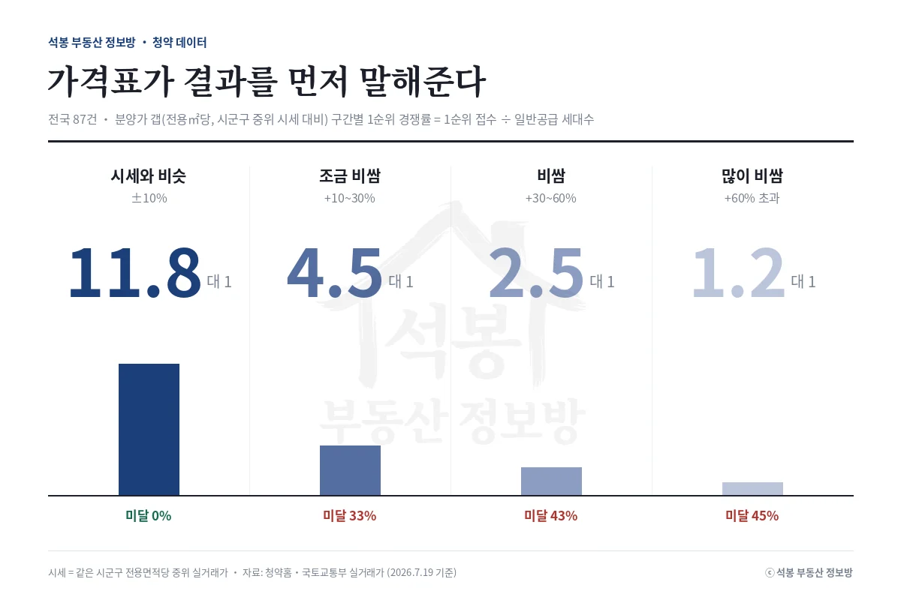

지난주(7월 13~19일) 청약 결과가 나온 수도권 두 단지가 정반대 성적표를 받았습니다. 화성 야목역 단지는 통계상 주변 시세보다 15% 싼데 1순위 0.2대 1로 미달, 서울 동작 단지는 45% 비싼데 1순위 114.8대 1. 이 역설을 데이터로 풀고, 다음 주(7월 20~26일) 전국에서 문을 여는 12곳의 일정과 주목 단지까지 한 번에 정리했습니다.
지난주 성적표: 극과 극이었던 두 단지
단지
지역
모집
분양가(전용㎡당) vs 시군구 시세
1순위 경쟁률
야목역 서희스타힐스 그랜드힐 (조합원 취소분)
경기 화성
83세대
시세보다 15% 낮음
0.2대 1 (미달)
동작 센트럴 동문 디 이스트
서울 동작
72세대
시세보다 45% 높음
114.8대 1
먼저 기준부터 밝혀두면, 이 글의 경쟁률은 모두 1순위 경쟁률(1순위 접수 건수를 일반공급 세대수로 나눈 값)입니다. 2순위까지 합친 숫자나 특별공급은 포함하지 않아서, 청약홈 표의 총 접수 건수와는 다르게 보일 수 있습니다.
야목역 단지는 이번 취소분(83세대)만이 아니라 앞서 나온 본물량 241세대도 1순위 0.3대 1로 미달이었습니다. 두 번 연속 수요가 붙지 않은 겁니다. 반대로 동작 센트럴은 72세대 모집에 1순위 통장이 8천 개 넘게 몰렸습니다.
여기서부터는 회원에게 보여드립니다
카카오 로그인 3초면 전문을 읽을 수 있습니다. 무료입니다.
가입하시면 지역 시장조사 보고서(약식)를 2회 무료로 요청하실 수 있습니다.
이미 회원이면 같은 버튼으로 로그인만 됩니다
경쟁률 공식: 가격표가 결과를 먼저 말해준다

석봉 부동산 정보방이 최근 청약 공고 중 분양가와 주변 실거래 시세(같은 시군구의 전용면적당 중위 실거래가)를 비교할 수 있고 1순위 경쟁률까지 확정된 87건을 전수 분석했습니다. 분양가가 시세보다 얼마나 비싼지(갭)에 따라 결과가 이렇게 갈립니다.
갭이 커질수록 1순위 중위 경쟁률은 11.8 → 4.5 → 2.5 → 1.2대 1로 계단식으로 내려가고, 미달 비율은 0%에서 45%까지 올라갑니다. 요즘 분양가가 대부분 시세보다 높게 나오는 상황에서, +60%를 넘어가면 둘 중 하나는 다 못 채우는 시장이라는 뜻입니다. (시세보다 싼 구간은 표본이 적어 차트에서 뺐는데, 상한제 공공택지 단지들은 수십대 1을 기록해 온 반면 아래 야목역 같은 예외도 있습니다.)
공식이 깨지는 두 가지 경우
첫째, "시세보다 싸다"의 시세가 어디 시세인가. 야목역 단지의 비교 기준인 화성시 중위 시세는 실거래 표본 2,978건으로 계산되는데, 이 표본의 몸통은 동탄신도시입니다. 동탄이 끌어올린 화성시 평균과 비교하면 야목(서부 외곽, 매송면 생활권)의 분양가는 15% 싸 보이지만, 정작 야목 인근의 실제 거래 수준과 비교하면 싼 가격이 아니었던 셈입니다. 같은 시군구 안에서도 생활권이 다르면 "시세 대비 할인"은 착시가 될 수 있습니다.
둘째, 서울은 다른 리그다. 1순위 경쟁률이 확정된 서울 단지 11곳은 갭이 전부 +24% 이상이었는데 미달이 단 한 곳도 없습니다. 최저가 미아 4.3대 1이고, 오티에르 반포는 710대 1, 북서울자이 폴라리스 보류지는 428대 1이었습니다. 서울의 비교 기준인 구별 중위 시세에는 준공 수십 년 된 구축이 다 섞여 있어서, 신축 분양가가 통계상 비싸 보여도 신축끼리 비교하면 이야기가 달라지기 때문입니다. 동작 센트럴의 114.8대 1은 "비싼데도 흥행"이 아니라 "동작구 신축 기준으로는 통하는 가격"이었다고 읽는 게 맞습니다.
청약 성적 미리 읽는 체크 5가지
체크
보는 법
야목역
동작 센트럴
① 시세 갭
전용㎡당 분양가 vs 시군구 중위
-15%
+45%
② 비교 기준 보정
같은 생활권 시세인가
화성 중위≠야목 시세
구축 중위≠신축 시세
③ 지역 리그
서울(신축 희소)인가 외곽인가
수도권 외곽
서울 핵심 생활권
④ 물량 성격
본청약·취소분·보류지, 모집 규모
취소분 재공급(2회째)
72세대 소규모 모집
⑤ 자격 조건
상한제·특별공급 등 수요풀 제한
일반
일반
야목역은 ①만 좋고 ②③④가 전부 반대 방향이었고, 동작은 ①이 나빠 보여도 ②③④가 전부 흥행 쪽이었습니다. 갭 숫자 하나만 보지 말고 다섯 개를 같이 보자는 게 이 체크리스트의 요지입니다.
다음 주 청약 캘린더: 월요일에 12곳이 문 연다
다음 주는 7월 20일 월요일 하루에만 전국 12곳이 접수를 시작합니다. 경기 8곳에 강원·부산·충남·경남이 하나씩입니다.
단지
지역
세대
비고
고양창릉지구 S-3블록
경기 고양
1,282
이익공유형 · 발표 8.18
고양창릉 S-4블록
경기 고양
1,024
공공분양 · 발표 8.19
오산헤리티지자이 1단지
경기 오산
1,069
발표 7.28
오산헤리티지자이 2단지
경기 오산
714
발표 7.28
의왕역 SK VIEW
경기 의왕
820
발표 7.29
호반써밋 풍무Ⅲ
경기 김포
660
풍무역세권 · 발표 7.28
남양주 진접 서한이다음
경기 남양주
361
공공주택지구
평택역 더센트럴45
경기 평택
99
소규모
춘천 리버뷰 아이파크
강원 춘천
262
부산 장안지구 중흥S-클래스
부산 기장
488
공공택지
업성 푸르지오 레이크시티 2단지
충남 천안
448
거제 푸르지오 마린피스
경남 거제
423
마감도 몰려 있습니다. 접수 중인 성남 낙생 e편한세상 분당 퍼스트빌리지(신혼희망타운, 933세대)가 21일, 부천 역곡지구 하우스토리(신혼희망타운, 976세대)가 23일, 군포대야미지구 A-1블록(6년 분양전환 공공임대, 377세대)이 24일까지입니다. 발표는 야목역 취소분이 22일, 동작 센트럴이 23일(당첨가점 공개)로 예정돼 있습니다.
다음 주 주목 단지: 고양창릉 S-3 · S-4
12곳 중 무게중심은 단연 고양창릉입니다. 두 블록 합쳐 2,306세대로 다음 주 물량의 절반 가까이 되고, 유형도 이익공유형(S-3)과 공공분양(S-4)으로 갈립니다. 전용㎡당 분양가는 S-3이 847만원, S-4가 1,034만원인데, 덕양구 전체 중위 시세(729만원)와 비교하느냐 창릉 인근 신축권(1,011만원)과 비교하느냐에 따라 평가가 완전히 달라지는 단지라, 위에서 다룬 "비교 기준 보정"이 그대로 적용되는 사례입니다. 분양가 분해와 주변 실거래 비교는 단지 분석 글에서 따로 자세히 다룹니다.
원자료: 청약홈 분양 공고·경쟁률, 국토교통부 실거래가 공개시스템(시세는 같은 시군구 전용면적당 중위 실거래가, 2026년 7월 19일 기준) · 분석·제작: 석봉 부동산 정보방 · 본 자료는 정보 제공 목적이며 투자 권유가 아닙니다. 청약 자격·일정은 청약홈 공고문을 반드시 확인하세요.